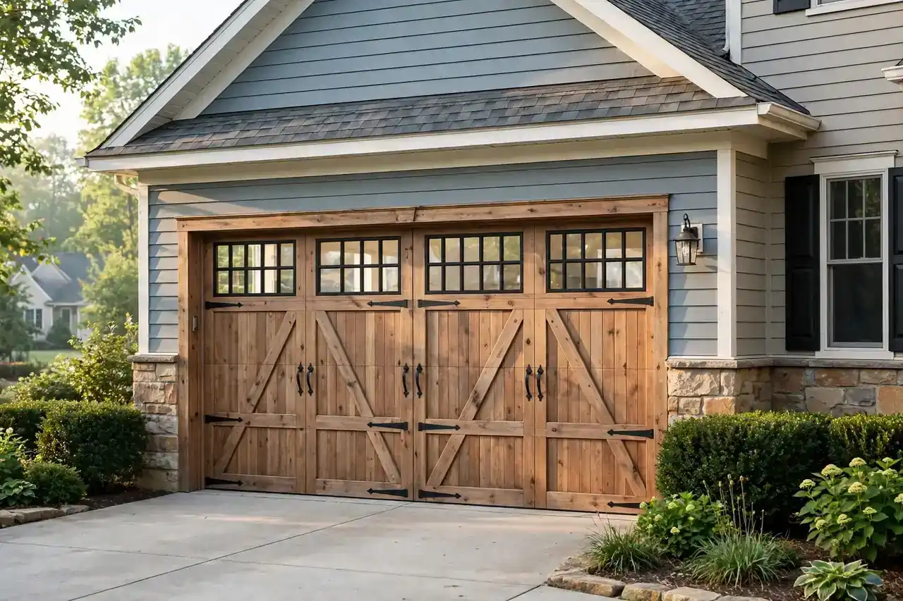

Why garage doors come off track, and what to do next
A garage door that has come off its track is a stop-and-call situation. Here is what causes it, what to check from a safe distance, and why re-railing belongs to a technician.

A sectional garage door runs on rollers inside vertical and horizontal tracks. When rollers leave the track, the door hangs crooked, binds, or jams, and the weight is no longer carried the way the system was designed to carry it. The safe response is to stop using the door and call a technician.
This guide explains what an off-track door means, the causes behind it, what you can safely observe, and what a repair involves. It does not give instructions for putting a door back on its tracks: that work involves tensioned springs and cables and belongs to a technician.
What does it mean when a garage door goes off track in Zion?
An off-track door has one or more rollers out of the track channel. You may see the door sitting unevenly, a gap between the door edge and the track, rollers sitting outside the channel, or the door wedged at an angle. The door may refuse to move, move a short distance and jam, or hang from one side.
The danger is the weight. A garage door is heavy, and when it is off its tracks the springs and cables may be holding that weight unevenly or not at all. Do not stand under the door, do not try to lift it by force, and do not keep running the opener. Disconnect the opener only if you can do so safely without reaching under the door, and keep people and vehicles clear until a technician has seen it.
Off-track problems are handled under garage door off-track repair in Zion, IL, which also covers cable, roller, and track work, since those parts usually fail together.
The most common causes of a garage door off track in Zion IL
Most off-track doors trace to one of six causes. Often two or more are present at once, which is why a repair usually inspects the whole track system rather than one part.
1. A broken lift cable
Lift cables wind onto drums above the door and carry its weight as it moves. A cable that snaps, frays, or comes off its drum leaves one side unsupported, and the door tilts and jams. Cable failure commonly causes the visible asymmetry of a door hanging on one side.
2. Worn or cracked rollers
Rollers wear, chip, or crack with use. A worn roller can wobble in the channel, climb out under load, or seize and drag, which stresses the track and the opener. Grinding or scraping noises often come before a roller fails outright.
3. A bent or loose track
Tracks bend from impact, loosen as brackets and bolts work free, or shift out of alignment over time. Even a small bend can catch a roller and throw the door out of line. Loose track brackets are a routine check on any maintenance visit.
4. A snapped torsion spring
When a spring breaks, the door loses its counterbalance on one side and becomes extremely heavy to lift. Running the opener against that load can drag the door sideways and out of the track. A loud bang followed by a door that will not lift is the classic spring-break sign.
5. Loose or missing hinge and bracket bolts
Hinges join the door sections and brackets anchor the tracks. Bolts loosen with vibration over years of use. A loose hinge lets a section twist; a loose bracket lets a track move. Both can push rollers out of line.
6. Impact damage
A vehicle backing into the door, or a heavy object striking it, can bend a panel, a track, or both in one blow. After any impact, check for bent tracks and cracked panels before running the door again, and do not run it if anything looks out of line.
How do I fix an off track garage door in Zion Illinois?
The honest answer for a homeowner is: do not try to fix it yourself. Re-railing a door means handling a heavy door that is partly unsupported, with springs and cables under tension. The safe sequence is short: stop using the door, keep the area clear, and call a technician.
What a technician does is a different matter, and knowing the shape of it helps you judge the visit. The door is secured, the tension is handled safely, the cause is found and corrected, the rollers are returned to the tracks, the tracks are aligned and fastened, and the door is run through full travel with the safety reverse and sensors tested. If a cable, roller, spring, or track section is damaged, it is replaced as part of the same job.
Do not keep running the opener to force the door closed. Each cycle drags the door against the track, which can bend track sections, damage rollers, and strain the opener. If the door is stuck open and security matters, say so when you call, so the urgency of the situation is understood.
For the service description, see garage door off-track repair in Zion, IL. If a spring is involved, garage door spring replacement in Zion, IL explains the spring side of the system.
What affects the cost of off-track repair
No Zion price guide for off-track repair was found, and this business publishes no firm pricing, so no Zion figure is stated here. What the work involves depends on the cause: a loose bracket and a realignment is a smaller job than a snapped cable with a bent track section and worn rollers, and a broken spring alongside the derailment adds spring work to the same visit.
The parts involved, the condition of the tracks and rollers, and whether the door itself is damaged all shape the scope. Agree the scope in writing before work begins, and ask what was found so you know whether the cause was a single failed part or wear across the system.
National guide ranges for track, cable, and related repairs, each labeled with source, date, and scope, are collected in what garage door repairs cost: national guide ranges explained.
Common mistakes to avoid when your garage door derails in Zion
- Running the opener again. Forcing a jammed door bends tracks, damages rollers, and strains the opener.
- Lifting the door by force. A door off its tracks can drop or swing. Do not put your body under it or try to muscle it closed.
- Loosening track hardware yourself. Track brackets and spring hardware are under load. Leave adjustments to a technician.
- Ignoring the cause. A door that derailed once will usually do it again unless the worn roller, loose bracket, or failing cable behind it is corrected.
- Greasing the tracks. Tracks stay clean and dry. Lubricant belongs on rollers, hinges, and springs, not in the track channel.
When to call a professional for an off track garage door in Zion
Call a professional as soon as you see the door sitting crooked, hear rollers grinding or popping, find a cable loose or frayed, or feel the door bind partway through travel. Call right away if the door is stuck open, stuck shut with a vehicle inside, or hanging at an angle.
Older grid neighborhoods with alley-loaded detached garages, including garage doors in Central Zion, IL and garage doors in Joanna, IL, have many older original doors where track and roller wear is worth watching. Newer western subdivisions around garage doors in West Zion, IL are not exempt: impact damage and loose hardware happen at any age.
Milwaukee Garage Doors Inc is open 24 hours, every day. Call (224) 842-7761 and describe what the door is doing and whether it is stuck open or shut.
Frequently Asked Questions
What causes a garage door to go off track in Zion IL?
Usually a broken lift cable, worn or cracked rollers, a bent or loose track, a snapped spring, loose hinge or bracket bolts, or impact damage. Two or more causes are often present at once, which is why a repair inspects the whole track system rather than one part.
How do I fix an off track garage door in Zion Illinois?
Do not try to re-rail it yourself. Stop using the door, keep the area clear, and call a technician. Re-railing involves a heavy, partly unsupported door with springs and cables under tension, and forcing the door with the opener can bend tracks and damage rollers.
Can I drive with an off track garage door in Zion?
Do not drive through a door that is off its track, hanging crooked, or jammed. The door can drop or shift without warning. Keep vehicles clear, do not run the opener to force the door, and call a technician.
Who fixes off track garage doors in Zion IL?
Milwaukee Garage Doors Inc handles off-track, cable, roller, and track work in Zion, and is open 24 hours, every day. Call (224) 842-7761 and describe whether the door is stuck open, stuck shut, or hanging at an angle.
What happens during an off-track garage door repair?
The door is secured, the tension is handled safely, the cause is found and corrected, the rollers are returned to the tracks, the tracks are aligned and fastened, and the door is run through full travel with the safety reverse and sensors tested. Damaged cables, rollers, springs, or track sections are replaced as part of the same job.
Get help with Garage Doors in Zion
If your door is off its track, crooked, or jammed, stop using it and call Milwaukee Garage Doors Inc at (224) 842-7761. We are open 24 hours, every day.
Read about garage door off-track repair in Zion, IL and garage doors in Central Zion, IL, or go to contact Milwaukee Garage Doors Inc.